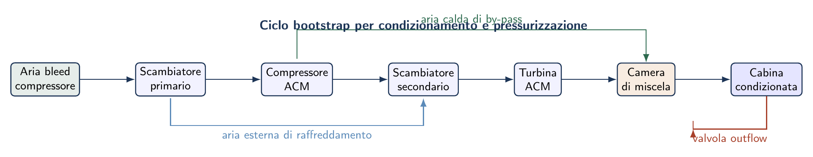
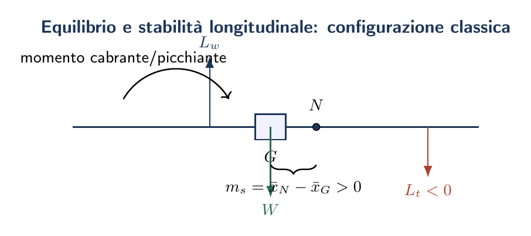

Esame di Stato 2018 — sessione suppletiva
Autonomia oraria · Pressurizzazione · Stabilità longitudinale · Volo librato
La prova della sessione suppletiva 2018 (codice I241, denominazione antecedente all'attuale A038) propone quattro quesiti che spaziano dalla meccanica del volo alla propulsione, dalla stabilità longitudinale all'aerodinamica del volo librato. Il primo quesito è di tipo numerico e fa riferimento al velivolo turboelica dimensionato nella Prima Parte; nel presente fascicolo si risolve adottando dati rappresentativi di tale categoria di velivolo.
Massima autonomia oraria alla quota di 17 500 ft
Atmosfera ISA a 17 500 ft
$17\,500\,\mathrm{ft} = 5334\,\mathrm{m}$. Con le leggi dell'Atmosfera Standard Internazionale (troposfera, gradiente $a = 6{,}5\,\mathrm{K/km}$): $$\begin{aligned}T_{5334} &= 288{,}15 - 0{,}0065 \times 5334 = 253{,}5\,\mathrm{K} \\ \rho_{5334} &= \rho_0 \left(\frac{T}{T_0}\right)^{\frac{g}{aR}-1} = 1{,}225 \times \left(\frac{253{,}5}{288{,}15}\right)^{4{,}256} = \mathbf{0{,}710\,\mathrm{kg/m}^3} \quad \left(\sigma = \frac{\rho}{\rho_0} = 0{,}580\right)\end{aligned}$$
Condizione di massima autonomia oraria
Coefficiente di resistenza indotta: $$k = \frac{1}{\pi\,\AR\,e} = \frac{1}{\pi \times 9 \times 0{,}85} = 0{,}0416$$
Dalla (eq:2018s_mp): $$\begin{aligned}C_{L,\mathrm{MP}} &= \sqrt{\frac{3 \times 0{,}025}{0{,}0416}} = \mathbf{1{,}343} \\ C_{D,\mathrm{MP}} &= 4 \times 0{,}025 = \mathbf{0{,}100} \\ E_{\mathrm{MP}} &= \frac{1{,}343}{0{,}100} = \mathbf{13{,}43}\end{aligned}$$
Calcolo della potenza minima a quota
Velocità di volo corrispondente a $C_{L,\mathrm{MP}}$ alla quota assegnata: $$V_{\mathrm{MP}} = \sqrt{\frac{2\,W}{\rho_{z}\,S\,C_{L,\mathrm{MP}}}} = \sqrt{\frac{2 \times 49\,050}{0{,}710 \times 20 \times 1{,}343}} = \mathbf{71{,}8\,\mathrm{m/s}} = 258\,\mathrm{km/h}$$
Resistenza e potenza minima: $$\begin{aligned}D_{\mathrm{MP}} &= \frac{W}{E_{\mathrm{MP}}} = \frac{49\,050}{13{,}43} = 3\,652\,\mathrm{N} \\ \Pi_{\min} &= D_{\mathrm{MP}} \cdot V_{\mathrm{MP}} = 3\,652 \times 71{,}8 = 262\,000\,\mathrm{W} = \mathbf{262\,\mathrm{kW}}\end{aligned}$$
Autonomia oraria massima
Il consumo istantaneo di carburante è: $\dot{m}_{\mathrm{carb}} = c_s \times \Pi_{\min} = 0{,}28 \mathrm{kg/kWh} \times 262 \mathrm{kW} = 73{,}4 \mathrm{kg/h}$.
L'autonomia oraria massima vale: $$\boxed{t_{\max} = \frac{m_{\mathrm{carb}}}{c_s \cdot \Pi_{\min}} = \frac{800}{0{,}28 \times 262} = \mathbf{10{,}9\,\mathrm{h}} \approx 11\,\mathrm{ore}}$$
Impianto di pressurizzazione e condizionamento
Perché pressurizzare
Alla quota tipica di crociera dei velivoli di linea ($10\,000$–$12\,000\,\mathrm{m}$) la pressione atmosferica scende a circa $\frac{1}{4}$ del valore al suolo, rendendo la pressione parziale di ossigeno insufficiente alla sopravvivenza senza maschere. L'ECS mantiene la cabina a una quota cabina di circa $2400\,\mathrm{m}$ ($p_{\mathrm{cab}} \approx 75\,\mathrm{kPa}$), con una pressione differenziale strutturale: $$\Delta p = p_{\mathrm{cab}} - p_{\mathrm{ext}} \approx 75 - 20 = 55\,\mathrm{kPa} \quad (\approx 8\,\mathrm{psi})$$ La fusoliera è dimensionata su questo $\Delta p$ con fattore di sicurezza $k = 1{,}5$.
Generazione dell'aria: bleed air
Sui velivoli a turbomotore l'aria compressa viene prelevata direttamente dal compressore del motore a due stadi distinti:
- spillamento a bassa pressione (8°–10° stadio): sempre aperto, fornisce la portata di base; l'aria è a $\sim 200\,{}^{\circ}\mathrm{C}$.
- spillamento ad alta pressione (14°–16° stadio): aperto solo quando il motore è a basso regime (piste, avvicinamento); l'aria è a $\sim 400\,{}^{\circ}\mathrm{C}$.
Il ciclo di condizionamento: ACM Bootstrap
L'aria spillata ad alta temperatura viene trattata dall'Air Conditioning Module (ACM) prima di essere immessa in cabina, secondo il ciclo bootstrap:
- Pre-raffreddamento: l'aria calda del compressore ($\sim 300\,{}^{\circ}\mathrm{C}$) passa attraverso uno scambiatore di calore aria–aria (ram air heat exchanger), raffreddandosi fino a $\sim 80\,{}^{\circ}\mathrm{C}$.
- Seconda compressione: un compressore ausiliario (ACM compressor) porta ulteriormente la pressione, riscaldando leggermente l'aria.
- Secondo scambiatore: l'aria compressa viene nuovamente raffreddata dal ram air.
- Espansione in turbina ACM: la turbina espande l'aria, raffreddandola a $\sim -20\,{}^{\circ}\mathrm{C}$. Il lavoro estratto aziona il compressore ausiliario (accoppiamento sull'asse con la turbina) e il fan del ram air.
- Miscelazione: l'aria fredda è miscelata con aria calda di bypass (elettrovalvola di cortocircuito) per raggiungere la temperatura di cabina desiderata ($18$–$24\,{}^{\circ}\mathrm{C}$).

Regolazione della pressurizzazione
La pressione in cabina è controllata dalle valvole di efflusso (outflow valves), che scaricano aria verso l'esterno. Riducendo la sezione di efflusso si aumenta la pressione cabina; allargandola si diminuisce. La centralina elettronica (cabin pressure controller) regola la posizione delle valvole per seguire la legge di pressurizzazione programmata (quota cabina $\le 2400\,\mathrm{m}$ indipendentemente dalla quota effettiva).
Valvole accessorie:
- Valvola di sovrapressione: si apre automaticamente se $\Delta p$ supera il valore strutturale limite ($\sim 8\,\mathrm{psi}$), scaricando l'eccesso.
- Valvola anti-vuoto: si apre se $p_{\mathrm{ext}} > p_{\mathrm{cab}}$ (discesa brusca non corretta), per evitare compressione della fusoliera.
- Valvola di sicurezza di emergenza: scarica completamente la cabina a comando del pilota per equalizzare la pressione prima di aprire le porte.
Ricambio dell'aria e qualità
L'aria in cabina è rinnovata continuamente (tasso di rinnovo: $\ge 0{,}25\,\mathrm{kg/min}$ per passeggero, standard IATA). Circa il 50% dell'aria è ricircolata attraverso filtri HEPA (High Efficiency Particulate Air, efficienza $> 99{,}97\%$ per particelle $> 0{,}3\,\mu\mathrm{m}$) per ridurre il consumo di bleed air. La concentrazione di $\mathrm{CO_2}$ è mantenuta $< 0{,}5\%$ in volume.
Piano orizzontale di coda: equilibrio e stabilità longitudinale
Funzione di equilibrio
L'ala e la fusoliera generano complessivamente una portanza $L_w$ applicata nel fuoco (centro aerodinamico del velivolo parziale, a circa il 25% della corda media). In generale il fuoco non coincide con il baricentro $G$: ne deriva un momento squilibrante al beccheggio $M_y \ne 0$.
Caso a: baricentro avanzato rispetto al fuoco.
Il peso $W$ applicato in $G$ crea rispetto al fuoco un momento a picchiare (antiorario). Il piano di coda deve generare una forza deportante verso il basso $L_t < 0$ per equilibrare: $L_w - |L_t| = W$ e $L_w \cdot x_F = |L_t| \cdot l_t$ (dove $l_t$ è il braccio del piano di coda rispetto al fuoco).Caso b: baricentro arretrato.
Il momento risultante è a cabrare. Il piano di coda deve generare una forza portante verso l'alto $L_t > 0$ per equilibrare.L'equilibratore (parte mobile del piano di coda) consente al pilota di variare la forza $L_t$ modificando la curvatura del profilo: deflettendo l'equilibratore verso il basso si aumenta la portanza del piano di coda (cabrata); verso l'alto si riduce (picchiata).
Funzione di stabilità longitudinale
Un velivolo è stabile longitudinalmente se, dopo una perturbazione dell'incidenza $\Delta\alpha$, nasce un momento aerodinamico che tende a riportare $\alpha$ al valore di equilibrio. La condizione matematica è: $$\frac{\partial M_y}{\partial \alpha} < 0 \qquad \Leftrightarrow \qquad C_{m\alpha} < 0 \label{eq:2018s_stab}$$
Ruolo del piano di coda.
Un aumento di $\alpha$ del velivolo intero produce (per l'ala e la fusoliera) un aumento di $L_w$ applicato al fuoco, e quindi un momento destabilizzante a cabrare (se il fuoco è avanzato al baricentro). Il piano di coda, essendo solidale alla fusoliera e molto arretrato rispetto al baricentro, avverte lo stesso aumento di incidenza e genera un incremento di forza $\Delta L_t$ che produce un momento stabilizzante a picchiare con braccio $l_t$ grande.Per valori tipici il contributo stabilizzante del piano di coda è: $$\Delta C_{m,t} = -a_t \cdot \frac{S_t\,l_t}{S\,bar{c}} \cdot \Delta\alpha \quad < 0 \qquad \text{(stabilizzante)}$$ dove $a_t = \partial C_{L,t}/\partial\alpha_t$ è la pendenza della curva di portanza del piano di coda e $S_t$ la sua superficie.
La condizione di stabilità complessiva del velivolo richiede che il baricentro sia avanzato rispetto al punto neutro: $$G \text{ avanzato rispetto a } N \quad \Leftrightarrow \quad \bar{x}_G < \bar{x}_N$$ Il margine di stabilità $m_s = \bar{x}_N - \bar{x}_G > 0$ (espresso come frazione della corda media) misura il "margine di sicurezza" longitudinale. Valori tipici: $m_s = 0{,}05$–$0{,}15$ per velivoli da trasporto.

Configurazioni speciali
Stabilatore (all-moving tail).
L'intera superficie orizzontale è mobile (nessuna parte fissa). Offre maggiore efficienza di controllo per velivoli ad alta velocità dove l'efficacia dell'equilibratore declina per effetti di comprimibilità. Tipico dei velivoli militari supersonici.Canard.
Il piano di coda è posizionato anteriormente all'ala (canard o "anatra"). In questo caso la forza del piano anteriore è sempre portante, riducendo il carico sull'ala e migliorando le prestazioni. Tuttavia la stabilità longitudinale è più difficile da garantire: il baricentro deve essere arretrato rispetto al fuoco alare.Volo librato: condizioni per la salita di quota in un aliante
Condizione necessaria per la salita
Sia $W_{\mathrm{sink}}$ la velocità di abbassamento del veleggiatore rispetto all'aria (sempre positiva, diretta verso il basso) e $V_{\mathrm{asc}}$ la velocità verticale ascendente della massa d'aria (termica). La velocità verticale del veleggiatore rispetto al suolo vale: $$W_{\mathrm{volo}} = V_{\mathrm{asc}} - W_{\mathrm{sink}}$$ La condizione per la salita è: $$\boxed{V_{\mathrm{asc}} > W_{\mathrm{sink}}}$$ ovvero la corrente ascendente deve avere componente verticale superiore alla velocità discensionale del veleggiatore. La condizione ottimale è quella in cui $W_{\mathrm{sink}}$ è minima (assetto di minima velocità discensionale).
Assetto di minima velocità discensionale
In volo librato la velocità discensionale è: $$W_{\mathrm{sink}} = V \sin\beta \approx V \cdot \frac{1}{E} \quad \Rightarrow \quad W_{\mathrm{sink}} = \frac{V}{E} = \frac{D \cdot V}{L} \approx \frac{\Pi_n}{W}$$ Il minimo di $W_{\mathrm{sink}}$ corrisponde al minimo di $\Pi_n/W$, cioè al minimo della potenza necessaria: stessa condizione della massima autonomia oraria. L'assetto è quello che massimizza $E\sqrt{C_L}$: $$C_{L,\mathrm{sink\,min}} = \sqrt{\frac{3\,C_{D0}}{k}}, \qquad W_{\mathrm{sink,min}} = \frac{\Pi_{n,\min}}{W}$$
Le termiche
Le principali sorgenti di correnti ascendenti sfruttate dai veleggiatori sono:
- Termiche convettive:
- l'aria si riscalda sul terreno (asfalto, terreno scuro, pendii soleggiati), diventa meno densa e sale sotto forma di colonne o bolle d'aria calda. La velocità tipica è $2$–$8\,\mathrm{m/s}$; si estendono fino alla tropopausa nei casi più intensi.
- Onde orografiche:
- il vento supera un rilievo montuoso e genera onde stazionarie sottovento. I rotor cloud e lenticular clouds segnalano le posizioni. Velocità ascendenti fino a $10\,\mathrm{m/s}$; altezze di $15\,000$–$25\,000\,\mathrm{m}$ nei casi eccezionali.
- Correnti di pendio:
- il vento soffia contro un pendio e viene deviato verso l'alto; sfruttabili solo nelle vicinanze del rilievo.
Esempio numerico: aliante moderno
Odografa del moto in aria non immobile.
Graficamente, la condizione di salita si visualizza sull'odografa: traslando l'intera curva verso l'alto di $V_{\mathrm{asc}}$ (vettore velocità aria), la nuova odografa supera l'asse delle ascisse se $V_{\mathrm{asc}} > W_{\mathrm{sink,min}}$. Il punto di intersezione dell'odografa traslata con l'asse orizzontale indica l'assetto ottimale per la risalita alla massima velocità verticale.